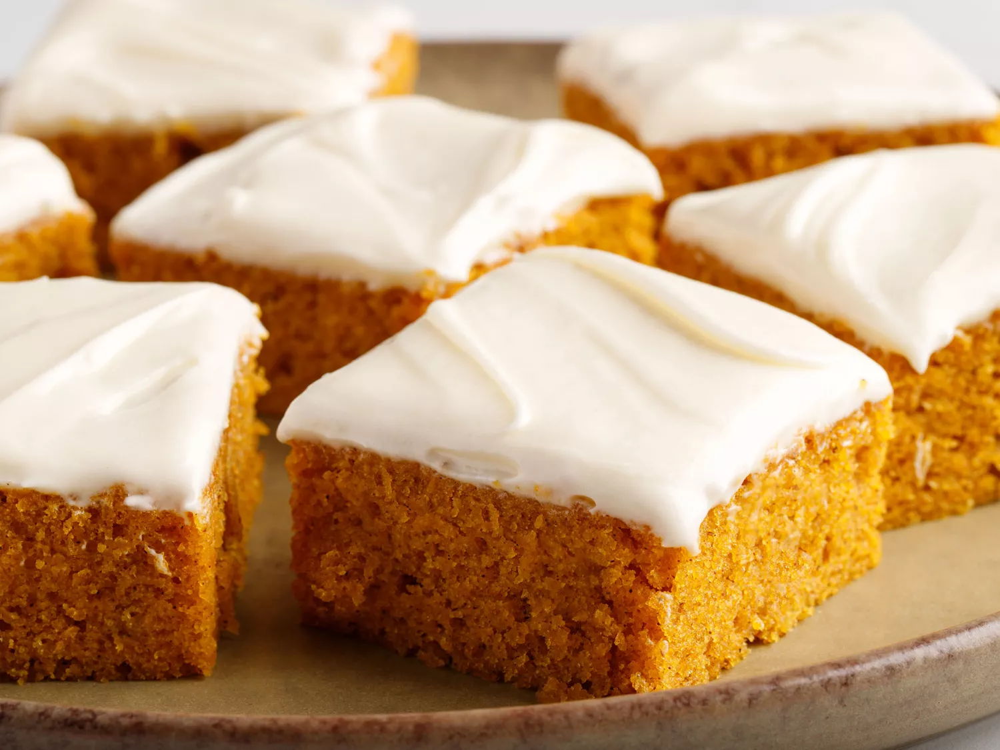

Pumpkin Bars

These pumpkin bars look delicious!
These easy pumpkin bars are full of fall flavor with a moist texture and a decadent cream cheese frosting. So far, I haven't found anyone who doesn't love them!
Ingredients
For the Cake:
- eggs
- pumpkin puree
- white sugar
- vegetable oil
- all-purpose flour
- cinnamon
- baking soda
- baking powder
- salt
For the Frosting:
- butter
- cream cheese
- vanilla extract
- confectioner's sugar
Steps
Baking the Cake
- Beat the wet ingredients in a bowl until well-combined
- Sift the dry ingredients together in a separate bowl, then add the dry mixture to the wet mixture
- Spread the batter in an ungreased jelly roll pan
- Bake in a preheated oven until the cake bounces back when gently pressed
Making the Frosting
- Beat the butter and cream cheese together until smooth, then stir in the vanilla
- Add the confectioners' sugar a little at a time, beating until mixture is smooth
Finishing Touches
- Evenly spread the frosting over the cooled cake
- Cut into 24 equal squares